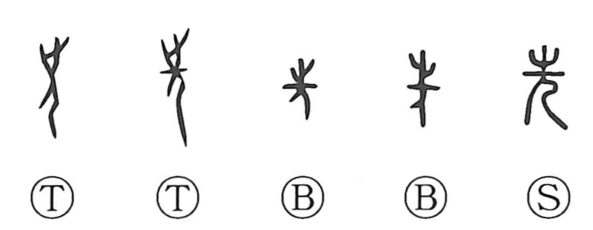

Explanation
A compound character formed from 止, the footprint sign that in early writing overlaps with 之 and means “to go, to walk,” placed above a person 人 (儿). By setting the mark of movement over a human figure, the graph highlights the act of moving before others—leading the way. Oracle-bone inscriptions from the Yin period show a ritual practice of sending people from other tribes ahead to test the safety of the road, reflecting the belief that unknown ground harbored dangerous spirits and required exorcistic road-purification rites, as seen in road-related graphs. From this ritual sense of “going ahead,” the character broadened to spatial meanings like “ahead, in front” and then to time—“formerly, previous”—as in terms for sages and ancestors of the past, and even to a prospective nuance in words for foreseeing or knowing in advance.